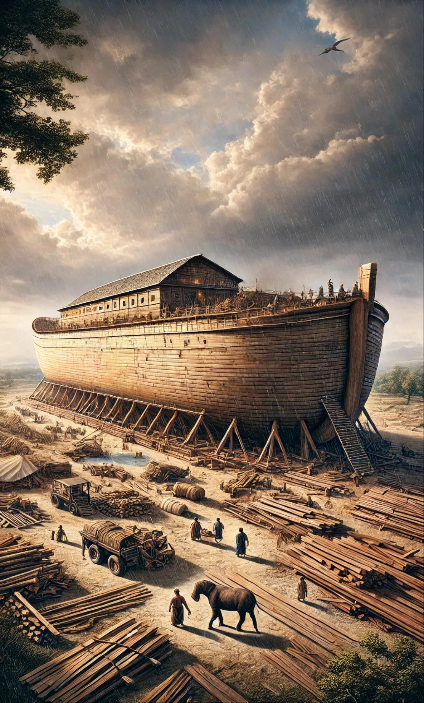
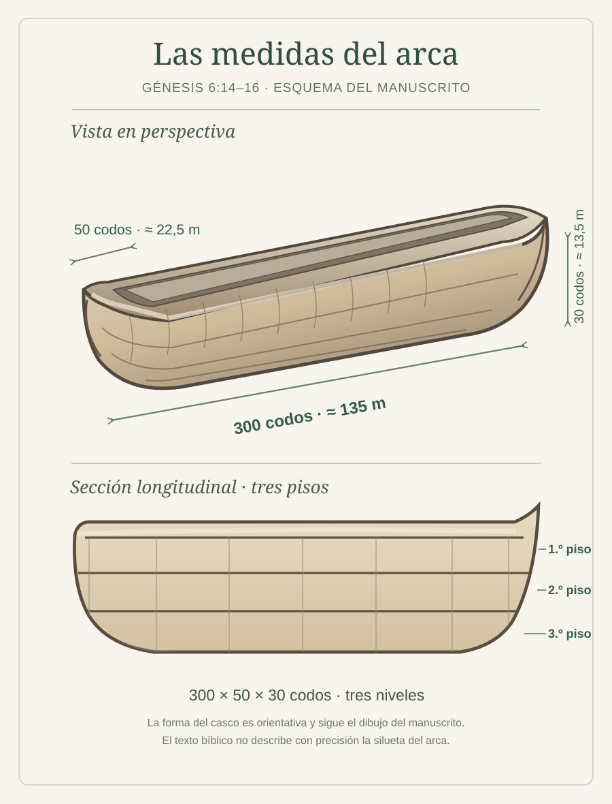
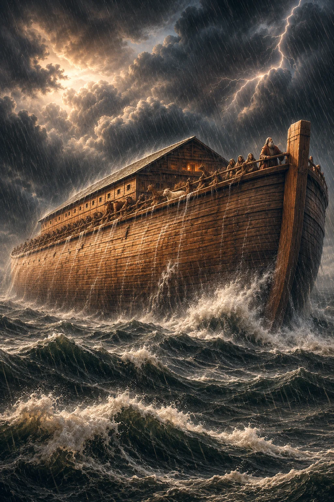
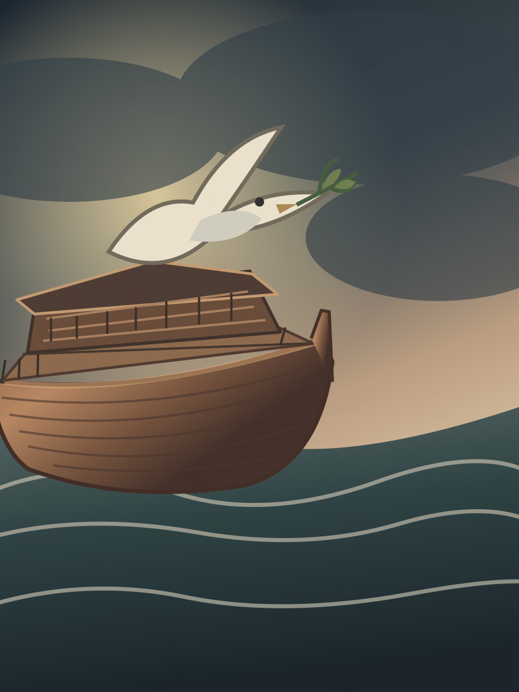
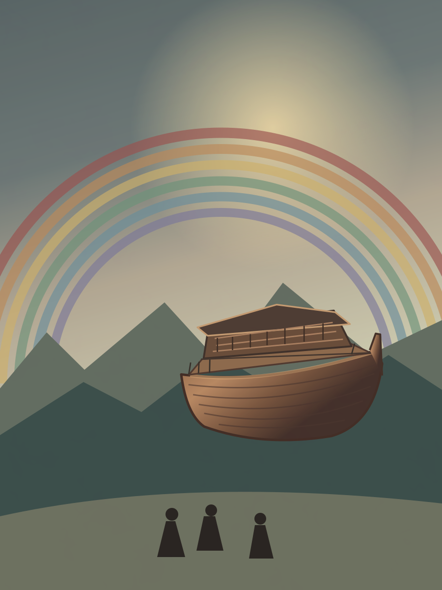

6:1 Aconteció que cuando comenzaron los hombres a multiplicarse sobre la faz de la tierra, y les nacieron hijas,
6:2 que viendo los hijos de Dios que las hijas de los hombres eran hermosas, tomaron para sí mujeres, escogiendo entre todas.54
6:3 Y dijo Jehová: No contenderá mi espíritu con el hombre para siempre, porque ciertamente él es carne; mas serán sus días ciento veinte años.55
6:4 Había gigantes nefilim56 en la tierra en aquellos días, y también después que se llegaron los hijos de Dios a las hijas de los hombres, y les engendraron hijos. Estos fueron los valientes57 que desde la antigüedad fueron varones de renombre.
6:5 Y vio Jehová que la maldad de los hombres era mucha en la tierra, y que todo designio de los pensamientos del corazón de ellos era de continuo solamente el mal.
6:6 Y se arrepintió Jehová de haber hecho hombre en la tierra, y le dolió en su corazón.
6:7 Y dijo Jehová: Raeré de sobre la faz de la tierra a los hombres que he creado, desde el hombre hasta la bestia, y hasta el reptil y las aves del cielo; pues me arrepiento de haberlos hecho.
6:8 Pero Noé halló gracia ante los ojos de Jehová.
6:9 Estas son las generaciones de Noé: Noé, varón justo, era perfecto en sus generaciones; con Dios caminó Noé.58
6:10 Y engendró Noé tres hijos: a Sem, a Cam y a Jafet.
6:11 Y se corrompió la tierra delante de Dios, y estaba la tierra llena de violencia.
6:12 Y miró Dios la tierra, y he aquí que estaba corrompida; porque toda carne había corrompido su camino sobre la tierra.
6:13 Dijo, pues, Dios a Noé: He decidido el fin de todo ser, porque la tierra está llena de violencia a causa de ellos; y he aquí que yo los destruiré con la tierra.

6:14 Hazte un arca de madera de gofer59; harás aposentos en el arca, y la calafatearás con brea por dentro y por fuera.
6:15 Y de esta manera la harás: de trescientos codos60 la longitud del arca, de cincuenta codos su anchura, y de treinta codos su altura.
6:16 Una ventana61 harás al arca, y la acabarás a un codo de elevación por la parte de arriba; y pondrás la puerta del arca a su lado; y le harás piso bajo, segundo y tercero.
6:17 Y he aquí que yo traigo un diluvio de aguas sobre la tierra, para destruir toda carne en que haya espíritu de vida debajo del cielo; todo lo que hay en la tierra morirá.
6:18 Mas estableceré mi pacto contigo, y entrarás en el arca tú, tus hijos, tu mujer, y las mujeres de tus hijos contigo.
6:19 Y de todo lo que vive, de toda carne, dos de cada especie meterás en el arca, para que tengan vida contigo; macho y hembra serán.
6:20 De las aves según su especie, y de las bestias según su especie, de todo reptil de la tierra según su especie, dos de cada especie entrarán contigo, para que tengan vida.
6:21 Y toma contigo de todo alimento que se come, y almacénalo, y servirá de sustento para ti y para ellos.

6:22 Y lo hizo así Noé; hizo conforme a todo lo que Dios le mandó.
7:1 Dijo luego Jehová a Noé: Entra tú y toda tu casa en el arca; porque a ti he visto justo delante de mí en esta generación.
7:2 De todo animal limpio tomarás siete parejas, macho y su hembra62; mas de los animales que no son limpios, una pareja, el macho y su hembra
7:3 También de las aves de los cielos, siete parejas, macho y hembra, para conservar viva la especie sobre la faz de la tierra.
7:4 Porque pasados aún siete días, yo haré llover sobre la tierra cuarenta días y cuarenta noches; y raeré de sobre la faz de la tierra a todo ser viviente que hice.
7:5 E hizo Noé conforme a todo lo que le mandó Jehová.
7:6 Era Noé de seiscientos años cuando el diluvio de las aguas vino sobre la tierra.
7:7 Y por causa de las aguas del diluvio entró Noé al arca, y con él sus hijos, su mujer, y las mujeres de sus hijos.
7:8 De los animales limpios, y de los animales que no eran limpios, y de las aves, y de todo lo que se arrastra sobre la tierra,
7:9 de dos en dos entraron con Noé en el arca; macho y hembra, como mandó Dios a Noé.
7:10 Y sucedió que al séptimo día las aguas del diluvio vinieron sobre la tierra.
7:11 El año seiscientos de la vida de Noé, en el mes segundo, a los diecisiete días del mes, aquel día fueron rotas todas las fuentes del grande abismo, y las cataratas de los cielos fueron abiertas,63
7:12 y hubo lluvia sobre la tierra cuarenta días y cuarenta noches.
7:13 En este mismo día entraron Noé, y Sem, Cam y Jafet hijos de Noé, la mujer de Noé, y las tres mujeres de sus hijos, con él en el arca;
7:14 ellos, y todos los animales silvestres según sus especies, y todos los animales domesticados según sus especies, y todo reptil que se arrastra sobre la tierra según su especie, y toda ave según su especie, y todo pájaro de toda especie.
7:15 Vinieron, pues, con Noé al arca, de dos en dos de toda carne en que había espíritu de vida.
7:16 Y los que vinieron, macho y hembra de toda carne vinieron, como le había mandado Dios; y Jehová le cerró la puerta.
7:17 Y fue el diluvio cuarenta días sobre la tierra; y las aguas crecieron, y alzaron el arca, y se elevó sobre la tierra.
7:18 Y subieron las aguas y crecieron en gran manera sobre la tierra; y flotaba el arca sobre la superficie de las aguas.
7:19 Y las aguas subieron mucho sobre la tierra; y todos los montes altos que había debajo de todos los cielos, fueron cubiertos.
7:20 Quince codos más alto subieron las aguas, después que fueron cubiertos los montes.
7:21 Y murió toda carne que se mueve sobre la tierra, así de aves como de ganado y de bestias, y de todo reptil que se arrastra sobre la tierra, y todo hombre.
7:22 Todo lo que tenía aliento de espíritu de vida en sus narices, todo lo que había en la tierra, murió.
7:23 Así fue destruido todo ser que vivía sobre la faz de la tierra, desde el hombre hasta la bestia, los reptiles, y las aves del cielo; y fueron raídos de la tierra, y quedó solamente Noé, y los que con él estaban en el arca.
7:24 Y prevalecieron las aguas sobre la tierra ciento cincuenta días.
8:1 Y se acordó Dios de Noé, y de todos los animales, y de todas las bestias que estaban con él en el arca; e hizo pasar Dios un viento sobre la tierra, y disminuyeron las aguas.
8:2 Y se cerraron las fuentes del abismo y las cataratas de los cielos; y la lluvia de los cielos fue detenida.
8:3 Y las aguas decrecían gradualmente de sobre la tierra; y se retiraron las aguas al cabo de ciento cincuenta días.
8:4 Y reposó el arca en el mes séptimo, a los diecisiete días del mes, sobre los montes de Ararat.
8:5 Y las aguas fueron decreciendo hasta el mes décimo; en el décimo, al primero del mes, se descubrieron las cimas de los montes.

8:6 Sucedió que al cabo de cuarenta días abrió Noé la ventana64 del arca que había hecho,
8:7 y envió un cuervo, el cual salió, y estuvo yendo y volviendo hasta que las aguas se secaron sobre la tierra.65
8:8 Envió también de sí una paloma, para ver si las aguas se habían retirado de sobre la faz de la tierra.
8:9 Y no halló la paloma donde sentar la planta de su pie, y volvió a él al arca, porque las aguas estaban aún sobre la faz de toda la tierra. Entonces él extendió su mano, y tomándola, la hizo entrar consigo en el arca.
8:10 Esperó aún otros siete días, y volvió a enviar la paloma fuera del arca.
8:11 Y la paloma volvió a él a la hora de la tarde; y he aquí que traía una hoja de olivo en el pico; y entendió Noé que las aguas se habían retirado de sobre la tierra.
8:12 Y esperó aún otros siete días, y envió la paloma, la cual no volvió ya más a él.
8:13 Y sucedió que en el año seiscientos uno de Noé, en el mes primero, el día primero del mes, las aguas se secaron sobre la tierra; y quitó Noé la cubierta del arca, y miró, y he aquí que la faz de la tierra estaba seca.
8:14 Y en el mes segundo, a los veintisiete días del mes, se secó la tierra.

8:15 Entonces habló Dios a Noé, diciendo:
8:16 Sal del arca tú, y tu mujer, y tus hijos, y las mujeres de tus hijos contigo.
8:17 Todos los animales que están contigo de toda carne, de aves y de bestias y de todo reptil que se arrastra sobre la tierra, sacarás contigo; y vayan por la tierra, y fructifiquen y multiplíquense sobre la tierra.
8:18 Entonces salió Noé, y sus hijos, su mujer, y las mujeres de sus hijos con él.
8:19 Todos los animales, y todo reptil y toda ave, todo lo que se mueve sobre la tierra según sus especies, salieron del arca.
8:20 Y edificó Noé un altar a Jehová, y tomó de todo animal limpio y de toda ave limpia, y ofreció holocausto en el altar.
8:21 Y percibió Jehová olor grato; y dijo Jehová en su corazón: No volveré más a maldecir la tierra por causa del hombre; porque el intento del corazón del hombre es malo desde su juventud; ni volveré más a destruir todo ser viviente, como he hecho.
8:22 Mientras la tierra permanezca, no cesarán la sementera y la siega, el frío y el calor, el verano y el invierno, y el día y la noche.

AÑOS DESDE LA CREACIÓN
El tiempo de las aguas
Fechas del relato de Génesis 7–8 y reconstrucción aproximada con meses de treinta días.
Los 40 días de lluvia están incluidos en los 150 días de predominio de las aguas. Las fechas asignadas a las aves son inferencias, no indicaciones expresas del texto. El relato no precisa el día de la salida del arca. El final de las lluvias también varía un día según se use cómputo inclusivo o exclusivo.